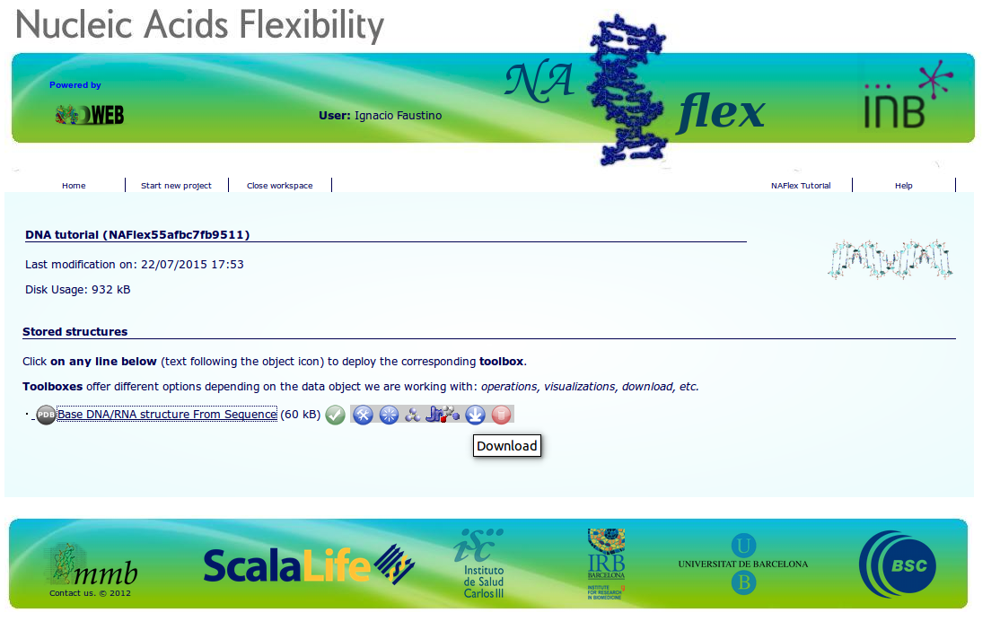
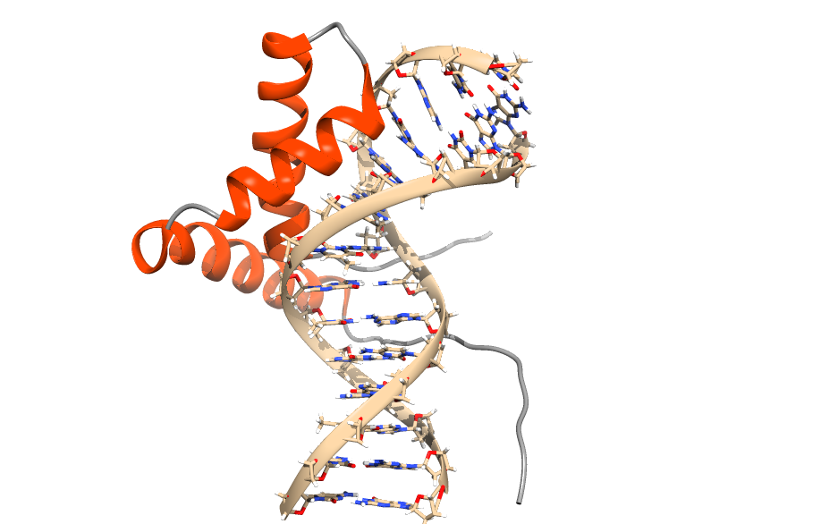

DNA
The material offered in this page is LEGACY material. This means that it either pertains to older iterations of the Martini force field and/or that it is no longer actively supported. However, this does not mean that there aren’t cool things to be learned here! Have a look! If you are looking for the current iterations of the Martini force field lectures or hands-on tutorials, click here to go back!
NOTE: You can download all the files required for this tutorial from here. Please note that you have to adjust some of the paths (mostly location of the force field files) below if you use this package.
Setting up double-stranded DNA
This is a brief tutorial on how to set up and try out DNA Martini simulations. The tutorial package includes the itp files for DNA as well as a modified martinize script to coarse grain a DNA molecule.
Martini DNA can be used to model both single-stranded as well as double-stranded DNA and provides two separate elastic networks. This tutorial will show only an example of creating a dsDNA topology using the stiff elastic network but a dsDNA topology with soft network or a ssDNA topology without elastic network can be created using the same procedure. For dsDNA structures the stiff elastic network is a good starting point for seeing how your system behaves in a CG simulation. There are also options for creating elastic networks for more complicated DNA structure, martinize-dna options all-stiff and all-soft are meant to be starting points for creating topologies for such structures but they are beyond the scope of this tutorial. The DNA release package includes a README file that should have sufficient instructions for creating the other types of DNA topologies after you have finished this tutorial.
- Unpack the tutorial files you downloaded (it expands to na-tutorials).
$ tar -xvzf na-tutorials_20170815.tar- Go to the folder
na-tutorials/dna-tutorial/martini-dnaand download the 1BNA PDB file. Martinize for DNA works best with cleaned up.grofiles so you should first remove ions and water molecules from the.pdbfile and convert it to a.grofile. NOTE, download from the PDB will give you 1bna.pdb, a copy named 1BNA.pdb is provided in the tutorial archive if you want to spare yourself the trouble to download it.
$ grep -v HETATM 1bna.pdb > 1BNA-cleaned.pdb
$ gmx editconf -f 1BNA-cleaned.pdb -o 1BNA-cleaned.gro- Next we can use
martinize-dna.py(supplied for you in the current directory) to create a Martini DNA topology for 1BNA.
$ python martinize-dna.py -dnatype ds-stiff -f 1BNA-cleaned.gro -o cg-dna.top -x cg-1bna.pdbNext, you need to change the .top file to include the correct .itp files. This can be done with your favourite text editor but scriptable options are given below. Note: there are two sets of commands here, the first for Mac OSX, the second for Linux. In both cases, the backslashes (\) need to be typed as indicated.
OSX
$ sed -i .bak 's/#include "martini.itp"/#include "martini_v2.1-dna.itp"\
#include "martini_v2.0_ions.itp"/' cg-dna.top and Linux
$ cp cg-dna.top cg-dna.top.bak
$ sed -i 's/#include "martini.itp"/#include "martini_v2.1-dna.itp"\n#include "martini_v2.0_ions.itp"/' cg-dna.top - You can visualize the mapping of Martini DNA by opening both the atomistic and coarse-grained structures in VMD. (The visualization is clearer if you show the CG structure as small VDW spheres.)
$ vmd -m 1BNA-cleaned.pdb cg-1bna.pdb- Next you need to create a simulation box for DNA and solvate it as well as add counterions. (You will find a pre-equilibrated box of water here.)
$ gmx editconf -f cg-1bna.pdb -d 1.2 -bt dodecahedron -o box.gro
$ gmx solvate -cp box.gro -cs water.gro -o bw.gro -radius 0.22 -maxsol 1250You can replace water with ions in .top file without using genion at the same time as we add waters there. Note: the next line assumes that exactly 1250 water beads were added to the DNA by the genbox tool; the first 1100 added beads are designated as normal water beads, the next 128 beads are designated as anti-freeze water beads, and the final 22 beads are designated as sodium ions.
$ printf "\nW 1100\nWF 128\nNA 22\n" >> cg-dna.top- Use the
em.mdpprovided in the directory and run an energy minimization.
$ gmx grompp -f em.mdp -c bw.gro -p cg-dna.top -o 01-em -maxwarn 1
$ gmx mdrun -v -deffnm 01-em- Next, you can run a short equilibration using the
equil.mdpfile. Note, a smaller time step might be needed for initial equilibration. Note that sometimes you might need to run a series of short equilibrations, increasing the time step up to the value in theequil.mdpfile and starting each one from the final structure of the previous one.
$ gmx grompp -f equil.mdp -c 01-em.gro -p cg-dna.top -o 02-eq
$ gmx mdrun -v -deffnm 02-eq -rdd 2.0- Now you are ready to start your first DNA simulation. Use the
mdrun.mdpfile to produce a longer simulation, do the preprocessing and start the simulation. Note that with the elastic network the domain cell size needs to be kept fairly large (option -rdd 2.0).
$ gmx grompp -f mdrun.mdp -c 02-eq.gro -p cg-dna.top -o 03-run
$ gmx mdrun -v -deffnm 03-run -rdd 2.0- You can visualize the movements of the DNA, ions and waters using VMD while your simulation is still running (you will need to open a new terminal). Note that bonds in Martini are longer than bonds normally shown in VMD. Please consult the VMD tutorial to get better visualization.
$ vmd 02-eq.gro 03-run.xtcCommon problems
Below are some some of the most common pitfalls when starting a Martini DNA simulation. We go through them here so that you know to avoid them when starting your own DNA simulations.
- Not curating the input file for martinize-dna.py
There are several things that can go wrong before martinize-dna.py is even run. Best course of action is to manually curate the input file, remove all heteroatoms and convert the file to a gro file. martinize-dna.py requires the residuenames to be ‘DA’,‘DC’, etc. in order to detect them correctly.
You can try this yourself. Go to the folder common-problems/1 inside the package you downloaded. Try running martinize-dna.py with the given input file. Then try to fix the issue by modifying the residuenames using a text editor or a script (column editing in vi comes really handy here) and see that martinize-dna.py runs succesfully after this.
- Placing the “#define RUBBER_BANDS” below the DNA itp file in the system topology file.
The topology file is read from top to bottom and if the RUBBER_BANDS are not defined before the DNA itp file no elastic network will be applied to the DNA. This is the first place to look if the DNA structure is deforming right in the beginning of your simulation.
Go to the folder common-problems/2 and run a short simulation with the provided files. Then open the cg.top file and fix it and run the same simulation again and see the difference.
- Getting wrong number of chains from martinize-dna.py
This often goes unseen unless you check the output of martinize-dna.py on your screen. Especially the ‘Found X chains:…’ part of the output. If a chain is split in two you can try to fix that by adjusting the cut-off inside the martinize-dna.py. Open the script and search forCUT-OFF_CHANGEand adjust the value from 3.0 to a suitably large value.
Go to the folder common-problems/3 and open the gro file using VMD to see that the structure consist of 2 DNA strands. Next, try running martinize-dna.py (provided here in the same folder so you won’t modify the version other parts of the tutorial use) on the given input file and verify from output that you get 3 chains instead of 2. Open martinize-dna.py with a text editor and search for CUT-OFF_CHANGE and adjust the cut-off value from 3.0 to 4.0. Run martinize-dna.py again and verify that it detects the DNA as 2 strands.
Input from sequence
In case you want to create an all-atom DNA structure from canonical values, there are several softwares/webservers that can help with this. One of those is NAFlex which requires only the user to create an account to save his/her projects. NAFlex allows several ways to build your DNA structure.
After giving a name for your project, we will select the option DNA/RNA Simulation from Sequence (although we will not run any simulation here). Click the “Next” button.
As an example you can build a relatively short oligonucleotide according to the right-handed B-DNA Arnott parameters with the following sequence (enter the string and click “Create Project”):
ACAGCTAGCATGCATGCA
3.- Click on the “Next” buttons until you see a window with a pdb file (compare the picture below). Clicking on the link to the pdb file will reveal a set of buttons. Download the file. No it is time to check the output structure after you have downloaded and unzippid the output file.
- You can now use the downloaded .pdb file and build a Martini model from it as shown for 1BNA in the previous section. You can copy the necessary files from that directory.

NB1: You might need to make some changes in your pdb from NAFlex. For example, make sure the sugar atoms have a prime (’) and not as asterisk (*). Also, the names of ending residues must be changed to standard names (e.g. DA5 to DA).
NB2: NAFlex has multiple applications but in this tutorial we will focus on building a structure from ab initio.
DNA analysis: physical parameters
As for all-atomistic models, we can calculate the base pairs and base pair steps helical parameters for coarse-grained DNA models. cgHeliParm.py has been developed for the analysis of the DNA/RNA double stranded structures in molecular dynamics (MD) simulations. Here you can download the latest version of the cgHeliParm package. Like other atomistic softwares (e.g. 3DNA, Curves+), it defines a geometric reference frame for each base/base pair to calculate several structural descriptors of DNA/RNA from the GROMACS CG Martini MD trajectory. As output the helical descriptors as a function of time are saved in individual files.
For now, the current version of cgHeliParm.py allows to calculate the local structural parameters of double stranded DNA molecules (i.e. base pair and base pair step helical parameters). We are currently working on extending the calculation to other structural parameters (e.g. groove widths and depths). Please note that in this version only double-stranded, standard nucleic acids can be analysed. This excludes mispaired, modified, single-stranded DNA, triplexes and quadruplexes from its application.
Before using cgHeliParm.py you need first to install python in your computer. If you don’t have it, go to the Python wiki and follow the instructions to install it in your working computer.
The second thing you will have to do is to install the python package MDAnalysis and mdreader.
Once python and the MDAnalysis and mdreader packages are installed we can use cgHeliParm.py. First, we will have to create a ‘dry’ trajectory with only DNA. This can be done using the trjconv Gromacs tool and the corresponding NDX file. For this case, we will use the same trajectory from the previous DNA tutorial (1BNA). Go to the martini-dna tutorial and convert the trajectory twice (selecting the group for DNA when prompted, which should be number 1).
$ gmx trjconv -s 03-run.tpr -f 03-run.xtc -o ../DNA_analysis/cgHeliParm/dna.xtc -pbc cluster
$ gmx trjconv -s 03-run.tpr -f 03-run.xtc -o ../DNA_analysis/cgHeliParm/dna.gro -dump 0Now, change to the cgHeliParm directory:
$ cd ../DNA_analysis/cgHeliParmin this directory, we can run the cgHeliParm.py script by running in the command line:
$ python cgHeliParm.py -f dna.xtc -s dna.gro -o dnaThis may take some time depending on the length of your trajectory and number of processors available. After the script has finished you will see that there are several files in your folder, corresponding to base pair and base pair steps helical parameters (file names are informative). Each file contains information for each bp or step along the simulation time. The first column refers to the first bp or step in the 5’3’ strand sense.
Persistence length
We provide also a tool to calculate the persistence-length of a double-stranded DNA. This tool requires both a fairly long dsDNA strands as well as a long simulation so we provide an example trajectory to try this out. The tool uses two different ways of averaging the results but the numbers should be fairly close to each other.
To calculate the persistence length go to the folderpersistence-lengthand run the following command:
$ python persistence-length-calculator.py -s run.gro -f run.xtc -n run.ndx -oplot test -b 100000Advanced tutorial: protein-DNA complex
DNA is recognized by proteins in many different ways. As a first approximation to protein-DNA complexes, we will use the SRY protein (1j46, which is provided in the directory, but can also be downloaded here), which is involved in sex determination, to generate our first protein-DNA complex simulation using the CG Martini model. Go to the directory dna-tutorial/protein_DNA.
First things first. To create our CG model of a protein-DNA complex from a PDB file we will need to split both protein and DNA molecules to generate their CG models. This means that you will need to create as many PDB files as molecules your complex has. To put everything on the same page, we will call them protein_AA.pdb and dna_AA.pdb. (This has been done for you already, you may want to also try it yourself!) We will then proceed to create their CG models with the corresponding martinize script.

- We will first build the CG DNA using the martinize-dna script but before that we will convert the .pdb file into a .gro file:
$ gmx editconf -f dna_AA.pdb -o dna_aa.gro
$ python martinize-dna.py -dnatype ds-stiff -f dna_aa.gro -o dna.top -x dna_CG.pdb And for the CG protein model we will use the original martinize script:
$ gmx editconf -f protein_AA.pdb -o protein_aa.gro
$ python martinize.py -f protein_aa.gro -o protein.top -x protein_CG.pdb -dssp your-path-to/dssp -p backbone -ff elnedyn22- We will now merge the PDB files corresponding to the CG models (protein_CG.pdb and dna_CG.pdb) using the cat command for example.
$ cat dna_CG.pdb protein_CG.pdb > complex_CG.pdb- You can visualize the mapping of Martini DNA by opening both the atomistic and coarse-grained structures in VMD. The CG beads are best visualized as VDW spheres. Note that by concatenating the protein and DNA files, the combined CG coordinate file is interpreted by VMD as two frames. By stepping through them in the VMD main window, you can see the protein and the DNA sites.
$ vmd -m 1j46.pdb complex_CG.pdbAs in the double stranded DNA tutorial for 1BNA, we will create a .top file that includes the .itp files. We can copy the dna.top file and modify to include the correct .itp files. With the experience from previous tutorial, would you be able to write a .top file for the system yourself? Check by comparing your result to the provided file cg-complex.top.
Next we will solvate the solute creating a box around it as well as adding counterions. We will use the same water.gro file that we used previously to create the 1BNA CG model. (Download water box from here.) Note that by concatenating the protein and DNA files, the combined coordinate file is seen as two separate frames by GROMACS tools. Therefore, we need a preprocessing step.
$ grep ATOM complex_CG.pdb > complex_CG-cleaned.pdb
$ gmx editconf -f complex_CG-cleaned.pdb -d 1.2 -bt dodecahedron -o box.gro
$ gmx solvate -cp box.gro -cs water.gro -o bw.gro -radius 0.22 -maxsol 1250You can replace water with ions in .top file without using genion at the same time as we add waters there.
$ printf "\nW 1100\nWF 124\nNA 26\n" >> cg-complex.top- Use the same em.mdp file provided with in the directory
dna-tutorial/martini-dnaand run an energy minimization.
$ gmx grompp -f em.mdp -c bw.gro -p cg-complex.top -o 01-em -maxwarn 1
$ gmx mdrun -v -deffnm 01-em- Next, you can run a short equilibration using the equil.mdp file. (Note, a smaller time step might be needed for initial equilibration).
$ gmx grompp -f equil.mdp -c 01-em.gro -p cg-complex.top -o 02-eq
$ gmx mdrun -v -deffnm 02-eq -rdd 2.0- Now you are ready to start your first protein-DNA simulation. Use the mdrun.mdp file to produce a longer simulation and start.
$ gmx grompp -f mdrun.mdp -c 02-eq.gro -p cg-complex.top -o 03-run
$ gmx mdrun -v -deffnm 03-run -rdd 2.0- You can visualize the trajectory using VMD while your simulation is still running.
$ vmd 02-eq.gro 03-run.xtcDNA and Backward
DNA structures can be backmapped into atomistic resolution using Backward. Before starting this part of the tutorial you should first go and do the Backward tutorial. The DNA backmapping files are as of now not yet part of the downloadable backward package but files for CHARMM are in the tutorial package in the backmapping folder together with the backward scripts. Next, we will first coarse-grain a dsDNA structure and then backmap it back to atomistic resolution.
- Got to the
na-tutorials/dna-tutorial/backmappingdirectory and cleanup and convert the given DNA structure 1BNA.pdb to a gro file in a reasonable simulation box.
$ gmx editconf -f 1BNA.pdb -d 1.4 -o 1BNA.gro- Create a CG structure using martinize-dna.py.
$ python ../martini-dna/martinize-dna.py -f 1BNA.gro -dnatype ds-stiff -p cg.top -x cg-1BNA.pdb- Solvate the CG structure.
$ gmx solvate -cp cg-1BNA.pdb -cs waterbox.gro -radius 0.22 -o cg-1bna-water.gro- Create an atomistic topology file for the system. Choose charmm27 and tip3p when prompted.
$ gmx pdb2gmx -f 1BNA.pdb- Edit the file
topol.topto point explicitly to thetip3p.itpfile provided for you (it will not recognize it in the standard path unfortunately). Thus, replace the line#include "charmm27/tip3p.itp"near the end of the file by#include "./tip3p.itp". Run the initram.sh script to perform the backmapping.
$ ./initram.sh -f cg-1bna-water.gro -o aa-charmm.gro -to charmm36 -p topol.top- Compare the initial structure to the backmapped structure.
$ vmd -m 1BNA.gro aa-charmm.groFor more information:
- Uusitalo, Jaakko J., et al. Martini Coarse-Grained Force Field: Extension to DNA. J. Chem. Theory Comput. 2015. 11, 8, 3932-3945.
- Uusitalo, Jaakko J., et al. Martini Coarse-Grained Force Field: Extension to RNA. Biophys. J. 2017. 113, 2, 246-256.
- Faustino, I., Marrink, S.J. cgHeliParm: analysis of dsDNA helical parameters for coarse-grained MARTINI molecular dynamics simulations. Bioinformatics 2017 btx444.